class: center, middle # An INFORMAL intro to QGIS! ### October 7, 2022 <br> #### Data: https://github.com/ISUEOGTP/Workshops/blob/main/QGIS/visioning2022/data.zip #### This presentation: https://isueogtp.github.io/Workshops/QGIS/visioning2022/agenda.html#1 <br> _Use arrow keys to move forward/backwards through slide show._ --- ### Workshop Overview 1. This workshop is NOT being recorded! <em>fortunately...</em><br><br> 1. Data files https://github.com/ISUEOGTP/Workshops/blob/main/QGIS/visioning2022/data.zip <br><br> 1. Refering to item #1, feel free to ask questions as we proceed. While I have a plan, today is a bit off-the-cuff. In the event that your question is a more complex than we can answer today, we will put it in the parking lot for our next session. --- #### Today's Agenda - 8:30 Welcome; Introductions; Overview; Getting Started & resources - 8:45 Make some data using http://www.GeoJson.io - 9:00 Setup environment, Loading Data, Styling Data - 9:30 _Quick break_ - 9:40 Working with tables - a simple data join - 10:00 Importing lat/long data & Geotagged photos (geocoding? - not yet!) - 10:15 Brief introduction to Digitizing (_see tasks sheets_) - 11:25 Challenge Problem and Practice (Join ACS data to county shapefile) - 10:40 _Quick break_ - 10:45 Fulcrum and collected GPS data (route data from Strava) - 11:15 Intro to Spatial Processing; Plugins - Buffering, Intersection etc. - 11:30 Exporting Maps - 11:40 Practice what you have learned - 11:55 Wrap up and discuss what is next ...<br><br> #### Other topics of interest Creating Map Layouts; Geocoding; Export a Web Map; DEM Support; Importing OSM Data; Map Atlas???; Georeferencing a raster image<br><br> --- ### Welcome and Introductions (including to those that contributed previously!) Christopher J. Seeger - cjseeger@iastate.edu <br> Professor, Iowa State University <br> Amy Logan - amylogan@iastate.edu <br> Research Scientist, Iowa State University GIS Facility <br> Thomas Petitti - Former Geospatial Technology Program Intern <br> 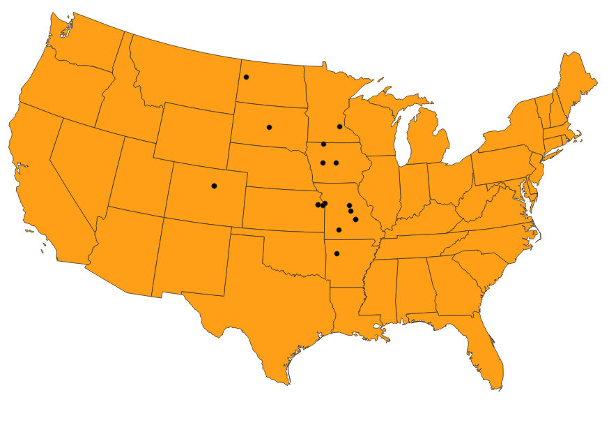 --- ### Installing QGIS ### To [https://www.qgis.org/en/site/](install QGIS) and click the Green Download Now button. Version 3.22 or above is recommended. Read instructions Mac users! --- ### What is QGIS? From the QGIS website, <br><br> "QGIS is a user friendly Open Source Geographic Information System (GIS) licensed under the GNU General Public License. <br><br> QGIS is an official project of the Open Source Geospatial Foundation (OSGeo). <br><br> It runs on Linux, Unix, Mac OSX, Windows and Android and supports numerous vector, raster, and database formats and functionalities." --- 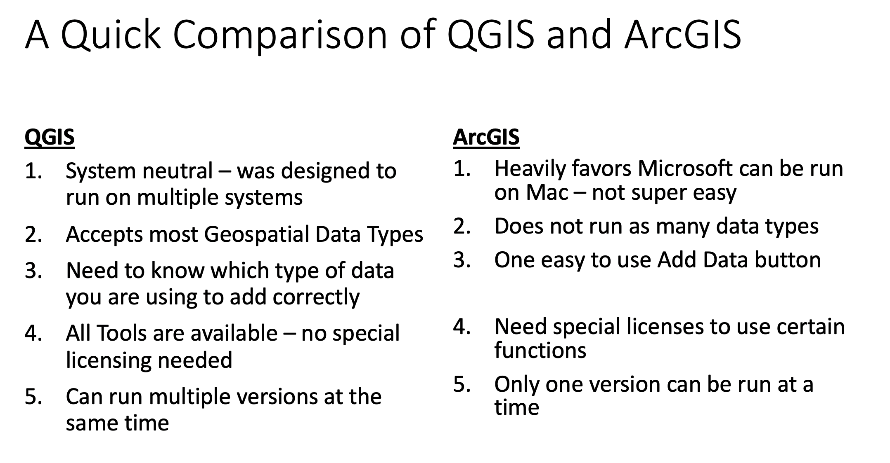 --- 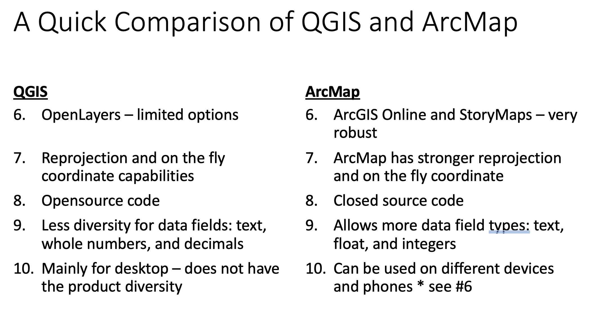 --- 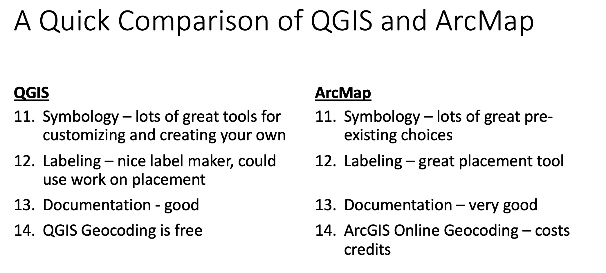 --- ### Resources to learn QGIS There are many online sources for QGIS, but first and foremost is the QGIS documentation. - https://docs.qgis.org/3.22/en/docs/index.html (stable) - https://docs.qgis.org/testing/en/docs/index.html (latest) <br><br> A list of additional resources: [https://isueogtp.github.io/Workshops/QGIS/files/QGIS_References_and_Resources.pdf](PDF) Chris will update this later today. --- --- #### Intro to GIS: GIS Data Types - Vector data - Points - Lines - Polygons - Raster Data - LiDAR Data - Triangulated Irregular Network (TIN) #####Additional Resources - <a href="https://unearthlabs.com/gis-data/" target="_blank">Introduction to GIS Data</a> - <a href="https://www.gislounge.com/geodatabases-explored-vector-and-raster-data/" target="_blank">Types of GIS Data Explored: Vector and Raster</a> - <a href="https://gisgeography.com/spatial-data-types-vector-raster/" target="_blank">Vector vs Raster: What’s the Difference Between GIS Spatial Data Types?</a> 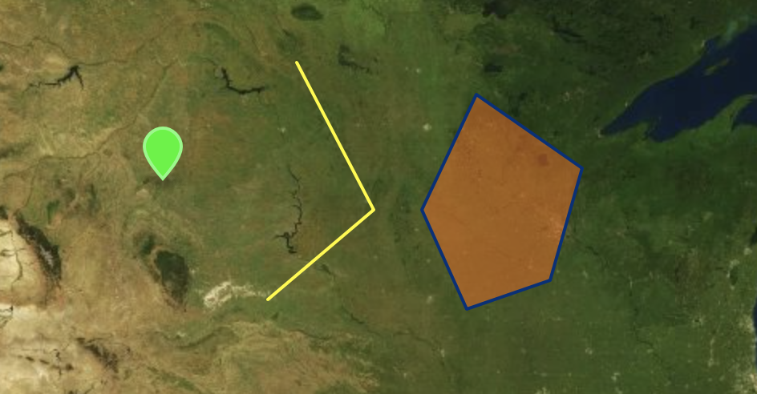 --- #### Intro to GIS: Raster Data Aerial imagery and weather radar <img src="tutorials/introGIS/raster.png" alt="" style="width: 90%;"/> --- #### Intro to GIS: LiDAR Derived Elevation 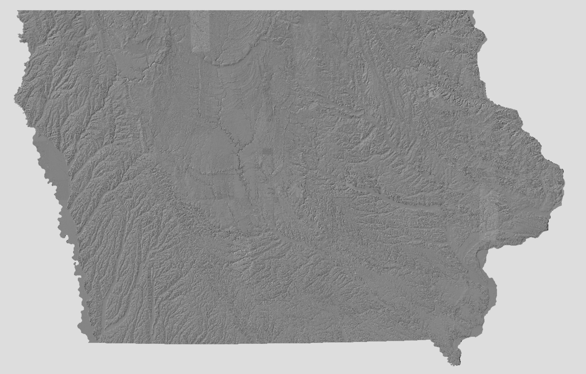 --- #### Intro to GIS: File formats There are several GIS file formats, a few common ones include: - Shapefiles (SHP) *A standard GIS format* - GeoJSON - GeoTIFF - GeoPackage *Common to QGIS and other opensource software* - CSV - KML/KMZ - Geodatabases GDB (commonly used in ESRI products) Shapefiles are made up of multiple files (green are required) 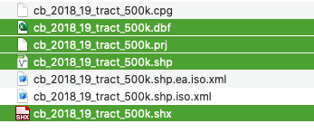 --- #### Intro to GIS: Shapefiles **.SHP** the main file, contains the shape coordinates: essentially describing all the basic shapes within the file. **.SHX** an index file, which helps the GIS software to find features more quickly within the main SHP file. **.DBF** a dbase file that contains all the attribute data for the features found in the .shp and .shx. **.PRJ** while not required, very desirable. This file contains information on which projection to use when displaying the data. --- #### Map Projections 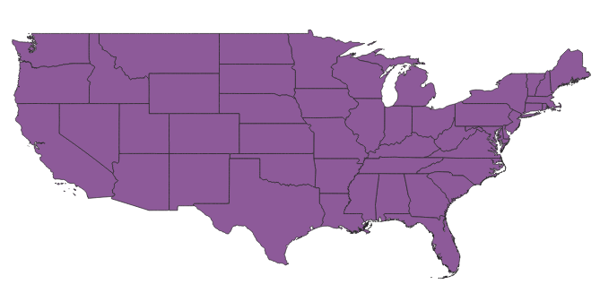 WGS 1984 Web Mercator Auxiliary Sphere 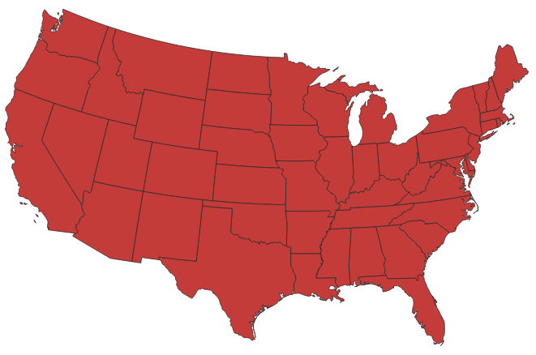 NAD 83 UTM 15N --- #### Map Projections <img src="https://images.newscientist.com/wp-content/uploads/2018/08/17165554/mercator_jpeg.jpg?width=800" alt="" style="width: 100%;"/> https://www.newscientist.com/article/2177132-new-world-map-is-a-more-accurate-earth-and-shows-africas-full-size/ --- #### Map Projections https://www.visualcapitalist.com/map-true-size-of-africa/ <img src="https://2oqz471sa19h3vbwa53m33yj-wpengine.netdna-ssl.com/wp-content/uploads/2020/02/true-size-of-africa.jpg" alt="" style="width: 80%;"/> --- #### Intro to GIS: GeoJSON.io We will start out by using a program that is not actually a GIS, but is a great helper tool for creating GIS files and learning about attributes and geometry Please open up https://GeoJSON.io and follow along! 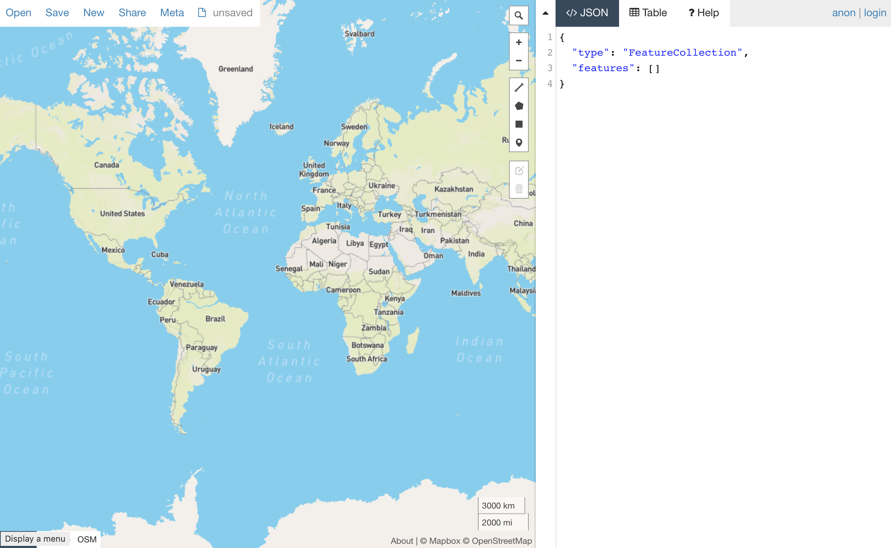 --- #### Intro to GIS: GeoJSON.io Beware of the order of latitude and longitude! 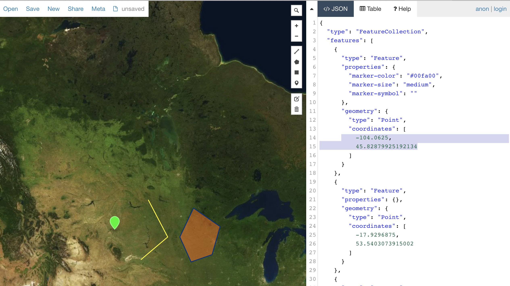 --- #### Simple mapping with GeoJSON.io 1. Make a map of points - Save as a CSV and KML file <br><br> 1. Make a map of a route you would take if on a 1-week summer road trip - save as a GeoJson <br><br> 1. Make a map using a triangle to identify the region of Iowa you think has the lowest household median income. Add a square where you think county with the lowest level of high school graduates exists. - Save this as a ShapeFile <br><br> --- #### GeoJSON and GitHub 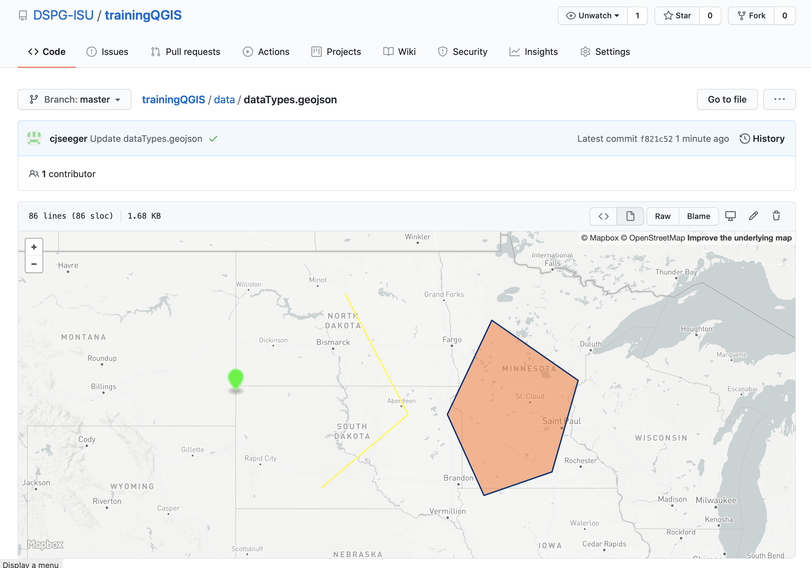 --- ### Explore QGIS Interface - Hands on!!! We will use data provided in the workshop data directory https://github.com/ISUEOGTP/Workshops/blob/main/QGIS/visioning2022/data.zip - Create a Favorite link to the data directory - Start with a Map of all the States and the Lakes - Colors might be different than what I have! --- ### Interface Overview 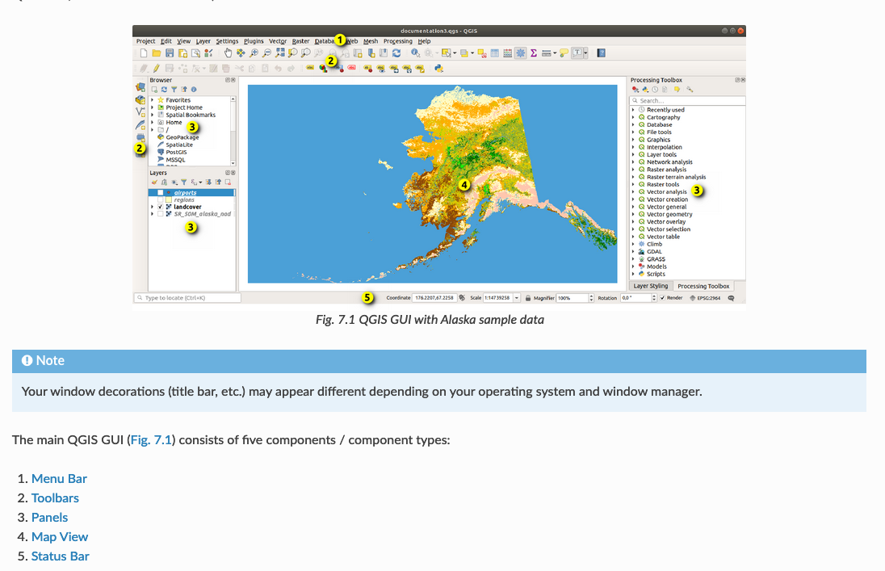 --- #### QGIS Interface 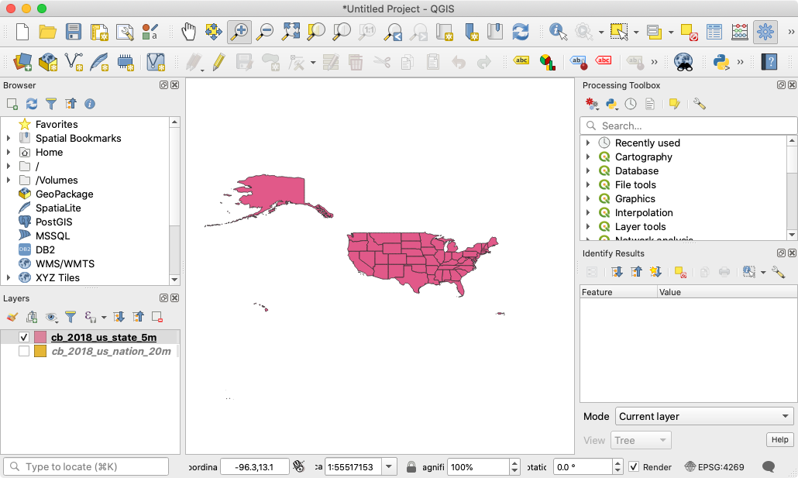 --- #### QGIS Import Sources 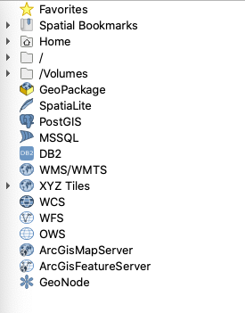 --- #### Customize Interface 1. Add Favorite link to the data directory and rename it Visioning Data 2. Manage and install plugins - in case this is not already on. - Processing - qgis2web (Skip this one for now, we will talk about it later maybe) 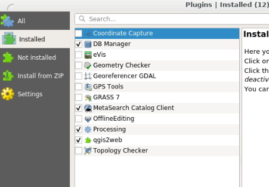 --- #### Add Data and Make a Thematic Map 1. Start a new map 1. Add the National/Regional states.shp and lakes.shp files (several weays to do this!) 1. Map Navigation 1. Inspect the layer's attribute (feature) table 1. Select (and info) and Query the map features 1. Add the vacation.shp file 1. Symbolize the map features 1. Query the map features 1. Filter the attribute table 1. Edit the feature table 1. Add feature labels 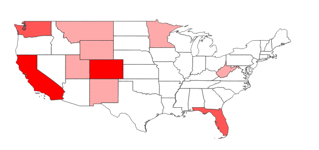 --- ###Loading Data _GIS Data Types and example files provided_ - Shapefile support - ia_county_utm15n.shp; Iowa_interstates.shp - Raster data - naip_2019_nc.tif - CSV - participants.csv; sampleCoordinates.csv - remember x is longitude and Y is latitude! - GeoPackage - sample_GeoPackage.gpkg - GeoJSON - smileRoute.geojson; also can make your own at http://geojson.io/ - Connecting to basemaps (Ortho Server) https://ortho.gis.iastate.edu/arcgis/rest/services/ortho - 2019 CIR https://ortho.gis.iastate.edu/arcgis/rest/services/ortho/naip_2019_cir/ImageServer - GLO Veg_Image and Polygons https://ortho.gis.iastate.edu/arcgis/rest/services/ortho/GLO_vegetation/MapServer - Transportation Borders https://maps.bts.dot.gov/services/rest/services/Transborder/Transborder/MapServer --- ###Styling Data Exercise - we will ignore first item, but I wanted to keep the link! - [PDF Tasksheet Styling a Heat map from GPX points](data/tasksheets/PM2082-19o-XYZ_Tiles_GPX_File_Heatmap.pdf) includes Loading XYZ layers. Optional list of XYZ Tile locations https://isueogtp.github.io/TaskSheets/resources/xyzTileURLs <br><br> - Loading Data and Styling on your own <br> --- ###Working with tables - Table Editing - Table Joining - Statistics/Summary - Calculate Values - Working with expressions - Field Calculations: Changing Text Case https://store.extension.iastate.edu/product/15642 - Table and Field Management Tips (Brief Intro to Processing Tools) --- ###Importing lat/long data & Geotagged photos - Discuss GPS trace mapping - I am providing a Strava GPX file of a recent walk. - Geotagged photos - resource https://opengislab.com/blog/2020/8/23/mapping-and-viewing-geotagged-photos-in-qgis<br><br> ```<th><img src="file:///[% photo %]" width="350" height="250"></th>``` --- ###Creating Data - Digitizing Data - Creating new Shapefiles https://store.extension.iastate.edu/product/15647 - Editing Shapefiles https://store.extension.iastate.edu/product/15648 - Geocoding https://store.extension.iastate.edu/product/15659 - Creating a GeoPackage - Creating Random Points QGIS https://store.extension.iastate.edu/product/15643 --- ###Challenge Problem and Practice (Join ACS data to county shapefile) --- ###Fulcrum and collected GPS data --- ###Spatial Processing PlugIns <br> Overview of Vector and Raster Menu <br> Processing Toolbox <br> - Buffering, Clipping https://store.extension.iastate.edu/product/15649 - Intersection, Union - Spatial Join --- ###Exporting Maps --- ###Creating Maps Labeling <br> Map Layout <br> - [Task sheet: Introduction to Print Layouts ](PM2082-20h-Introduction_to_Print_Layouts.pdf) - Adding Maps and object to a layout - Customizing the map layout options/properties <br> Exporting Maps and Data - Exporting Map Layout - Map Images - SVG and PDF Maps - Web Maps (covered in next section) <br> Practice what you have learned --- ###As time permits - Export a Web Map - DEM Support - Working with Geotagged Photos - Importing OSM Data https://store.extension.iastate.edu/product/15658 - Create a Map Atlas - Georeferencing a historic raster image https://store.extension.iastate.edu/product/15645 Other resources: - QGIS: Road Graph Plugin - Finding Shortest Path https://store.extension.iastate.edu/product/15653